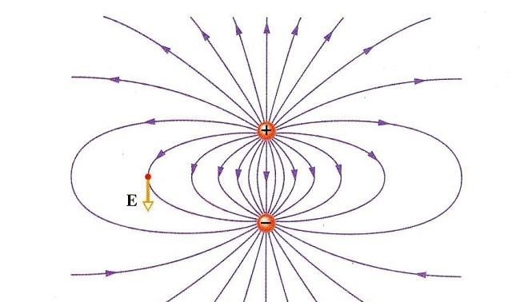

| Campo elettrico | Il campo elettrico è una regione dello spazio in cui una carica elettrica esercita una forza su un'altra carica posta al suo interno. Ogni carica elettrica, che sia positiva o negativa, genera un campo elettrico che si estende attorno a sé. La direzione del campo è definita dalla direzione della forza che eserciterebbe su una carica positiva di prova: esce dalle cariche positive e entra nelle cariche negative. L'intensità del campo elettrico dipende dalla quantità della carica che lo genera e dalla distanza dal punto in cui si misura il campo. Più la carica che genera il campo è grande e più ci si avvicina a essa, maggiore sarà l'intensità del campo. La forza che il campo esercita su una carica di prova è tanto più forte quanto maggiore è l'intensità del campo e la quantità di carica sulla quale agisce. Le linee di forza sono un altro modo per rappresentare il campo elettrico. Queste linee sono immaginarie e indicano la direzione in cui una carica positiva di prova si sposterebbe se fosse messa nel campo. Le linee si allontanano dalle cariche positive e si avvicinano a quelle negative. La densità di queste linee (cioè quante linee per unità di area) indica l'intensità del campo: dove le linee sono più ravvicinate, il campo è più forte. Il campo elettrico è un concetto essenziale in molte applicazioni pratiche, come il funzionamento di dispositivi elettronici, motori elettrici, generatori e persino fenomeni naturali come i fulmini, dove le cariche elettriche si spostano attraverso il campo generato da altre cariche. Il comportamento del campo è descritto dalle leggi della fisica, come la legge di Coulomb, che stabilisce come le cariche interagiscono tra di loro attraverso il campo elettrico. |  |